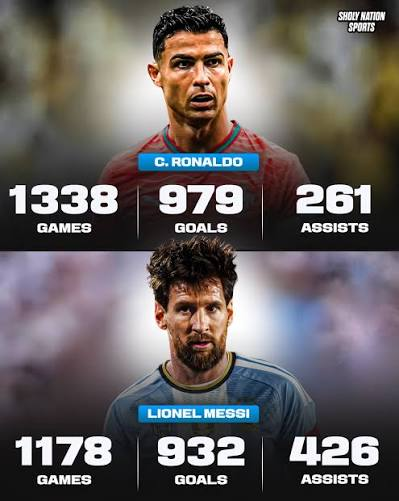

Messi After 2021
Messi won the 2021 Copa America, his first senior title with Argentina. Because of Barcelona's money problems he left the club that summer and joined PSG. He won the Ballon d'Or in 2021 and 2023, and he led Argentina to the 2022 World Cup. After joining Inter Miami in 2023 he won the 2024 Copa America too.
- 2022 World Cup: 7 goals and the title
- 2026 World Cup: 8 goals, a new all-time World Cup scoring record
- 2026 final: lost 1-0 to Spain after extra time
Ronaldo After 2021
Ronaldo was top scorer at Euro 2020 and passed Ali Daei to become the leading men's international scorer. He returned to Manchester United in 2021, left in late 2022 and joined Al Nassr in Saudi Arabia in 2023. In 2025 he won the Nations League again with Portugal.
- 2026 World Cup: 3 goals, the first man to score at six World Cups
- Portugal was knocked out by Spain in the last 16
Scoreboard Since 2021

| Category | Messi | Ronaldo |
|---|---|---|
| Ballon d'Or since 2020 | 2 (2021, 2023) | 0 |
| Senior international trophies since 2020 | 4 | 1 |
| World Cup goals in 2022 + 2026 | 15 | 4 |
| World Cup titles (career) | 1 | 0 |
Who Is the Greatest?
Ronaldo leads in career goals and Champions League titles. Messi leads in Ballon d'Or awards, assists and World Cup success. Fans will keep arguing, but both players changed football.